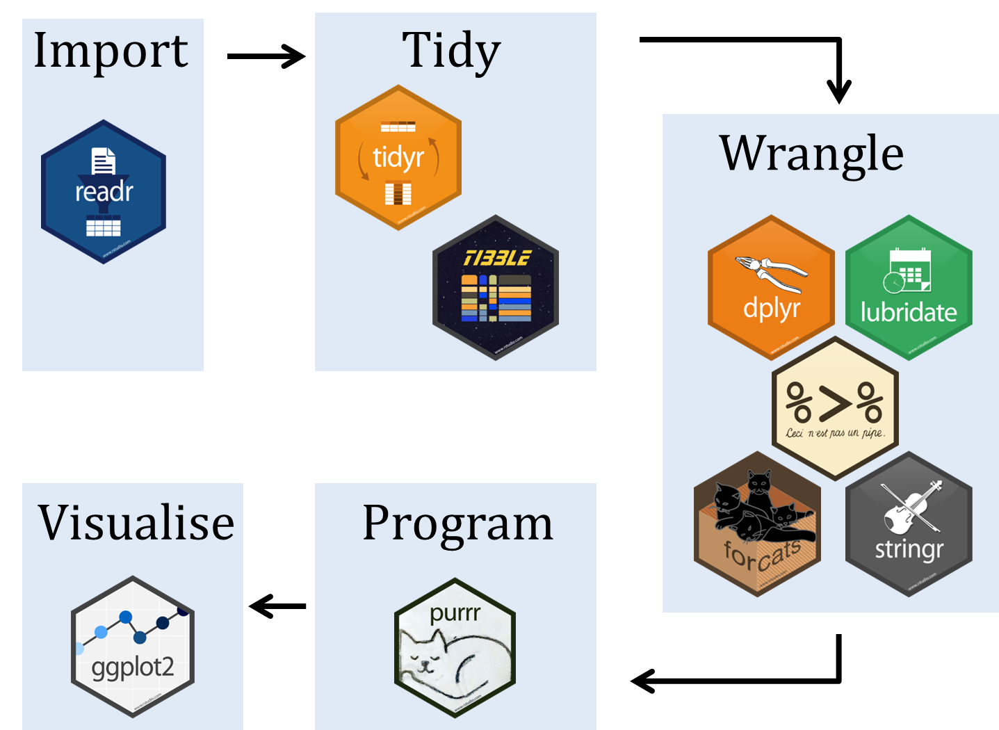

Manipulación y análisis descriptivo de datos con tidyverse (parte I)
Taller 1 · Sesión 2 · Cuaderno de aprendizaje autónomo
En la sesión anterior cargaste una encuesta real en R y aprendiste a consultar valores concretos. En esta segunda sesión damos el siguiente paso: preparar una base de datos completa para responder a una pregunta de partida: ¿quién ve más televisión, jóvenes o mayores?
Empezarás repasando lo más importante de la sesión anterior y trabajando sobre una copia de la General Social Survey para mantener intacto el archivo original. Aprenderás a encadenar cada paso de preparación de forma ordenada: limpiar los casos sin respuesta, revisar posibles duplicados, quedarte solo con la información necesaria, centrar el análisis en la población adulta y construir los grupos de edad.
Al terminar guardarás la tabla ya preparada en un nuevo archivo para futuros análisis, calcularás una primera comparación entre jóvenes y mayores y dejarás todo documentado en tu proyecto para poder repetir el proceso más adelante.
En este cuaderno
- Presentación
- Repaso breve de la sesión 1
- Al iniciar RStudio y cargar la encuesta
- Qué funciones vamos a usar: dplyr y tidyr
- ¿Qué es tidyverse y por qué lo usamos?
- La práctica: preparar los datos de la encuesta
- El operador
|>: «y después» - Paso 1: eliminar filas con NA
- Paso 2: comprobar filas repetidas
- Paso 3: seleccionar las columnas
- Renombrar las columnas con
rename() - Paso 4: filtrar y ordenar por edad
- Paso 5: crear una variable con
mutate() - Paso 6: crear grupos de edad
- Seleccionar dos grupos para compararlos:
==frente a%in% - Guardar el trabajo en un archivo CSV
Repaso breve de la sesión 1
Antes de transformar la encuesta completa, conviene tener presentes cuatro piezas de la sesión anterior que reaparecerán en cada paso de hoy. Si quieres comprobarlas en RStudio, puedes probar estos ejemplos con las cinco primeras personas de encuesta_social.csv.
Objetos, vectores, condiciones y NA
- Guardar valores en un objeto (
<-yc()). El operador<-guarda un resultado con un nombre yc()reúne varios valores en un vector. Hoy usaremos<-para guardar la tabla preparada endatos_trabajo. - Pedir una acción con una función. Escribimos el nombre de la función y, entre paréntesis, los datos con los que trabaja (e.g.
mean(age)olength(age)). Los verbos que usaremos hoy (select(),filter(),mutate()) funcionan exactamente igual. - Evaluar una condición. Una comparación como
age > 40devuelveTRUEoFALSEpara cada posición del vector, y permite seleccionar los casos que la cumplen (age[age > 40]). Hoyfilter()usará este mismo tipo de condiciones para elegir filas. - Distinguir
NAde0. Un0es una respuesta válida (cero horas);NAindica que falta el dato. Por defecto,mean()devuelveNAsi hay algún dato ausente y necesitana.rm = TRUEpara excluirlo. Hoy usaremosdrop_na()para retirar filas conNAantes de transformar la tabla.
# Cinco primeras personas de la encuesta
age <- c(26, 48, 67, 39, 25)
tvhours <- c(12, NA, 2, 4, 1)
# Funciones y condiciones sobre vectores
mean(age)
age[age > 40]
# Valores ausentes frente a respuestas disponibles
mean(tvhours)
mean(tvhours, na.rm = TRUE)[1] 41
[1] 48 67
[1] NA
[1] 4.75El data frame y cómo consultarlo
Al importar encuesta_social.csv, R guarda la encuesta en datos: una matriz de datos de 21.483 filas (personas encuestadas) y 9 columnas (variables de la misma longitud). Cada columna tiene su tipo: numérica (<dbl>, con la que podemos calcular medias) o texto (<chr>, con respuestas entre comillas como "Divorced").
En la sesión 1 consultamos datos de dos formas que hoy sustituiremos por verbos más legibles de tidyverse:
- Extraer una columna como vector con
$:mean(datos$tvhours, na.rm = TRUE)devuelve2.980771. - Consultar por coordenadas
[fila, columna]:datos[1, 3]devuelve una casilla concreta (26), mientras quedatos[3, ]devuelve todas las variables de la tercera persona.
Hoy dejaremos los corchetes a un lado y trabajaremos sobre una copia llamada datos_trabajo con select() (para elegir columnas) y filter() (para quedarnos con ciertas filas), sin tocar el archivo original en el disco.
Qué significa [1] en las salidas de R
Al ejecutar age[1] aparece [1] 26 y es fácil pensar que ese [1] identifica a la primera persona de la encuesta. No es así: [1] solo indica la posición dentro del resultado que imprime R.
# Aunque pidas la 3.ª persona o una media, la salida empieza por [1]
age[3]
age[age > 40][1] 67
[1] 48 67En age[age > 40], 48 era la segunda persona de age, pero aparece con [1] porque ocupa el primer lugar de la respuesta devuelta. Si imprimes una lista larga que salta de línea (e.g. datos$age[1:14] en una consola estrecha), cada renglón empieza indicando en qué posición retoma la cuenta (e.g. [10] para el décimo valor).
Importante. Nunca escribas ese [1] de la salida dentro de tu código ni lo interpretes como el identificador de la persona encuestada.
Al iniciar RStudio y cargar la encuesta
Cada vez que inicias una nueva sesión en RStudio, el entorno de R empieza vacío: los paquetes y las tablas que cargaste en la sesión 1 no permanecen en memoria al cerrar el programa. Para retomar el trabajo:
- Abre tu proyecto. Entra en la carpeta
taller_Rque creaste en la sesión 1 y haz doble clic entaller_R.Rproj. - Abre tu documento de trabajo. En RStudio, abre el documento Quarto (
.qmd) donde vas guardando tus bloques de código y notas. - Vuelve a cargar
tidyversey la encuesta. Comprueba queencuesta_social.csvsigue dentro de la carpetadatos/de tu proyecto y ejecuta el bloque inicial.
Usamos read_csv(), del paquete readr (incluido en tidyverse), para importar el archivo CSV en el objeto datos. Después, glimpse(datos) muestra una vista compacta de las variables, sus tipos y los primeros valores, como alternativa más recogida al str(datos) de la sesión 1.
# Cargar tidyverse
library(tidyverse)
# Leer el CSV y guardarlo en el data frame datos
datos <- read_csv("datos/encuesta_social.csv")
# Revisar las variables, sus tipos y algunos valores
glimpse(datos)Al ejecutar estas líneas, datos volverá a aparecer en el panel Environment con sus 21.483 filas y 9 columnas. Si antes quieres despejar la pantalla, recuerda que limpiar el panel Console solo borra el texto visible, no los objetos guardados; para vaciar objetos del entorno habría que usar el icono de la escoba en Environment.
Ver la salida de glimpse(datos)
Rows: 21,483
Columns: 9
$ year <dbl> 2000, 2000, 2000, 2000, 2000, 2000, 2000, 2000, 2000, 2000, 20…
$ marital <chr> "Never married", "Divorced", "Widowed", "Never married", "Divo…
$ age <dbl> 26, 48, 67, 39, 25, 25, 36, 44, 44, 47, 53, 52, 52, 51, 52, 40…
$ race <chr> "White", "White", "White", "White", "White", "White", "White",…
$ rincome <chr> "$8000 to 9999", "$8000 to 9999", "Not applicable", "Not appli…
$ partyid <chr> "Ind,near rep", "Not str republican", "Independent", "Ind,near…
$ relig <chr> "Protestant", "Protestant", "Protestant", "Orthodox-christian"…
$ denom <chr> "Southern baptist", "Baptist-dk which", "No denomination", "No…
$ tvhours <dbl> 12, NA, 2, 4, 1, NA, 3, NA, 0, 3, 2, NA, 1, NA, 1, 7, NA, 3, 3…Qué funciones vamos a usar: dplyr y tidyr
Estas son las funciones que usaremos hoy para preparar la encuesta. Todas pertenecen a dplyr, salvo drop_na() (tidyr), y quedan disponibles al ejecutar library(tidyverse).
Sobre las filas (personas encuestadas):
drop_na()· quitar filas con valores ausentes (NA).distinct()· comprobar si hay filas idénticas.filter()· quedarnos con quienes cumplen una condición.arrange()· ordenar las filas (e.g. de menor a mayor edad).
Sobre las columnas (variables):
select()· elegir solo las variables que necesitamos.rename()· cambiar el nombre de las columnas.mutate()· crear variables nuevas o transformar las existentes.case_when()· agrupar valores por tramos dentro demutate().
Otras funciones útiles para ampliar
No las usaremos en la práctica de esta sesión, pero conviene tenerlas localizadas al trabajar con encuestas:
- Unir tablas por una variable común (
dplyr):left_join(),right_join(),inner_join(),full_join(). - Juntar las filas de varias tablas (
dplyr):bind_rows(). - Unir o separar texto de una columna (
tidyr):unite(),separate_wider_delim(),separate_longer_delim(). - Reordenar o recodificar factores (
forcats): consulta la hoja de referencia deforcats(PDF, en inglés).
¿Qué es tidyverse y por qué lo usamos?
Una caja de herramientas por etapas
tidyverse no es un único paquete aislado, sino una colección de paquetes pensados para trabajar juntos en cada fase del análisis de datos. Al ejecutar library(tidyverse) los cargamos todos a la vez:

Fuente de la figura: SEEC, Universidad de Ciudad del Cabo.
- Importar (
readr): leer y guardar archivos (e.g.read_csv()). - Ordenar y limpiar (
tidyr,tibble): estructurar la tabla y tratar los valores ausentes (en esto nos centramos hoy). - Transformar (
dplyr,forcats): seleccionar, filtrar, ordenar y crear variables (también lo trabajamos hoy). - Visualizar (
ggplot2): construir gráficos con la tabla preparada. - Programar (
purrr): automatizar tareas repetitivas.
Por qué elegimos tidyverse frente a R base
No es obligatorio usar tidyverse: todo lo que hacemos puede escribirse también con R base. Elegimos tidyverse por tres razones prácticas al empezar:
- Código cercano al inglés cotidiano. Verbos como
select()(seleccionar) ofilter()(filtrar) describen la acción que quieres pedir. - Sintaxis coherente. En estas funciones, dentro de los paréntesis escribimos primero la tabla con la que trabajamos y después los detalles de la operación.
- Mensajes de error más claros y útiles. Suelen señalar dónde está el problema y aportar pistas para corregirlo.
Para ver la diferencia, compara cómo pediríamos solo las columnas age y tvhours (con todas las filas de datos) en R base frente a dplyr:
# Con R base: dejar vacío lo que va antes de la coma conserva todas las filas
datos[, c("age", "tvhours")]
# Con dplyr (tidyverse): "de la tabla datos, selecciona age y tvhours"
select(datos, age, tvhours)Ambos ejemplos devuelven exactamente la misma tabla de 21.483 filas y 2 columnas, y ninguno modifica la tabla original datos.
Ver el resultado
# A tibble: 21,483 × 2
age tvhours
<dbl> <dbl>
1 26 12
2 48 NA
3 67 2
4 39 4
5 25 1
6 25 NA
7 36 3
8 44 NA
9 44 0
10 47 3
# ℹ 21,473 more rowsLa práctica: preparar los datos de la encuesta
Imagina que formamos parte de un equipo de investigación que quiere estudiar cuánto tiempo se dedica a ver la televisión según la edad. Ya tenemos la encuesta cargada en datos, pero antes de calcular medias o comparar grupos necesitamos preparar una tabla limpia y adecuada para nuestra pregunta.
Para no alterar nunca ni el archivo original (encuesta_social.csv) ni la tabla inicial (datos), trabajaremos sobre una copia llamada datos_trabajo. Qué decisiones tomamos al limpiar depende siempre de la pregunta de investigación: aquí nos centraremos solo en la edad y en las horas diarias de televisión.
Nuestra hoja de ruta en seis pasos
- Revisar los valores ausentes. Excluir de
datos_trabajolos casos sin edad (age) o sin horas diarias de televisión (tvhours). No es una regla universal para toda encuesta, sino una decisión acotada a las dos variables que necesitamos en esta práctica. - Comprobar si hay filas idénticas. Revisar si existen registros repetidos antes de reducir columnas, porque dos personas distintas pueden compartir las mismas respuestas en unas pocas variables y la tabla no incluye un identificador individual.
- Seleccionar dos columnas. Quedarnos únicamente con la edad (
age) y las horas diarias de televisión (tvhours), y darles nombres claros en castellano (edadyhoras_tv). - Filtrar y ordenar por edad. Asegurar que trabajamos con personas de 18 años o más, comprobar si el filtro excluye algún caso y ordenar la tabla de menor a mayor edad.
- Crear una variable. Calcular
tv_minutos, pasando las horas diarias de televisión a minutos al multiplicarlas por 60. - Crear grupos de edad. Clasificar a las personas encuestadas en cuatro tramos en la columna
grupo_edad: «18–29», «30–44», «45–64» y «65 o más» (son grupos de edad para comparar en la práctica, no etiquetas generacionales).
En el siguiente apartado verás cómo encadenar estos pasos de forma legible antes de ejecutar cada uno sobre la encuesta.
El operador |>: «y después»
Cuando preparamos una tabla rara vez hacemos una sola operación. Lo habitual es encadenar varias seguidas: e.g. primero seleccionar las columnas age y tvhours, y después mostrar sus cinco primeras filas.
El operador pipe (|>, incluido en R base) sirve precisamente para encadenar pasos en el orden en que ocurren, sin tener que ir guardando objetos intermedios ni anidar paréntesis difíciles de leer.
Sin pipe frente a con pipe
# Sin pipe: guardamos primero una tabla intermedia en dos_columnas
dos_columnas <- select(datos, age, tvhours)
head(dos_columnas, n = 5)
# Con pipe: pasamos el resultado de cada línea a la siguiente
datos |>
select(age, tvhours) |>
head(n = 5)En ambos casos R devuelve exactamente las mismas cinco filas y dos columnas, y ninguno de los dos ejemplos modifica la tabla original datos. La diferencia está en la claridad: con |>, no creas dos_columnas solo para consultar el siguiente paso.
Ver el resultado
# A tibble: 5 × 2
age tvhours
<dbl> <dbl>
1 26 12
2 48 NA
3 67 2
4 39 4
5 25 1Cómo leerlo y escribirlo rápido
Puedes leer |> en voz alta como «y después»: «Partimos de datos, seleccionamos age y tvhours y después mostramos las primeras cinco filas». Lo que queda a la izquierda de |> entra automáticamente como primer argumento de la función siguiente (por eso dentro de select() ya no repetimos datos, ni dentro de head() repetimos el resultado de select()).
- Atajo en RStudio:
Ctrl + Shift + Men Windows/Linux oCmd + Shift + Men Mac. - Si el atajo escribe
%>%en lugar de|>: puedes cambiarlo en Tools > Global Options > Code > Editing activando Use native pipe operator, |>. - No lo confundas con
|: una barra vertical sola (|) significa «o» en comparaciones lógicas; el pipe lleva siempre barra y mayor que (|>).
Paso 1: eliminar filas con NA
La función drop_na() (del paquete tidyr) elimina las filas que contienen valores ausentes (NA). Antes de borrar casos, conviene comprobar cuántas filas perderíamos según qué columnas revisemos. Para eso encadenamos drop_na() con nrow(), que cuenta el número de filas.
# Compara cuántas filas quedan según el criterio de limpieza
nrow(datos) # Antes de eliminar filas
datos |> drop_na() |> nrow() # Sin NA en ninguna columna
datos |> drop_na(age) |> nrow() # Sin NA solo en la edad[1] 21483
[1] 11299
[1] 21407Fíjate en la diferencia: si no indicas columnas, drop_na() revisa toda la tabla y descarta 10.184 casos; en cambio, al pedir solo age únicamente quedan fuera 76 casos. En estas pruebas todavía no modificamos datos ni creamos la copia de trabajo: solo comparamos recuentos.
Piénsalo antes de seguir. ¿Por qué puede ser una mala idea eliminar todas las filas que tengan algún NA en cualquier columna?
Ver respuesta
Porque descartarías personas por no haber respondido a preguntas que ni siquiera vas a usar en tu análisis. Además, si la falta de respuesta se concentra en determinados grupos, perder casos de forma innecesaria puede sesgar los resultados. Recuerda también que NA indica ausencia de dato (no equivale a 0 ni a texto vacío) y que drop_na() no convierte automáticamente respuestas de texto como "No answer" en NA.
Guardar la tabla de trabajo: datos_trabajo
Para estudiar el tiempo de televisión según la edad necesitamos que cada persona tenga dato tanto en age como en tvhours. Indicamos esas dos columnas en drop_na() y guardamos el resultado en datos_trabajo, comprobando después sus dimensiones con dim().
# Conserva solo los casos con dato en age y en tvhours
datos_trabajo <- datos |>
drop_na(age, tvhours)
# Comprueba cuántas filas y columnas quedan
dim(datos_trabajo)[1] 11299 9El primer número indica 11.299 filas (personas encuestadas) y el segundo, 9 columnas (variables): drop_na() elimina filas, pero conserva todas las columnas. En este archivo coincide con el resultado de drop_na() sin argumentos porque no hay NA en las demás variables, pero escribir drop_na(age, tvhours) deja explícito el criterio de la práctica.
La tabla original datos conserva intactas sus 21.483 filas. A partir de ahora aplicaremos los siguientes pasos sobre datos_trabajo.
Paso 2: comprobar filas repetidas
La función distinct() (de dplyr) conserva una sola copia de cada fila idéntica. Si la llamas sin indicar columnas, compara todas las variables de la tabla. Antes de decidir nada, comprobamos cuántas filas quedarían sin sobrescribir datos_trabajo:
# Compara el total actual con el número de filas únicas en todas las variables
nrow(datos_trabajo) # Filas de la tabla de trabajo
datos_trabajo |> distinct() |> nrow() # Filas distintas[1] 11299
[1] 11249La diferencia es de 50 filas: hay casos que coinciden exactamente en las nueve variables.
¿Significa esto que hemos registrado dos veces a la misma persona? No necesariamente. Dos personas distintas pueden dar las mismas respuestas en estas nueve preguntas. Como nuestra encuesta no incluye un identificador individual que permita confirmar si son registros duplicados, mantenemos las 11.299 filas de datos_trabajo.
- Por qué comprobamos esto ahora: si antes nos quedáramos solo con
ageytvhours, muchas más personas distintas coincidirían en edad y horas de televisión y sería imposible distinguir coincidencias de duplicados. - Cuándo resulta más útil: comprobar duplicados es clave al combinar tablas de varias fuentes. Si tuvieras una columna de identificador fiable (e.g.
id), convendría revisar primero por qué se repite y, si hace falta quedarse con una sola fila por persona conservando todas sus variables, usardistinct(id, .keep_all = TRUE).
Paso 3: seleccionar las columnas
Para estudiar el tiempo de televisión según la edad nos bastan dos variables: age (edad) y tvhours (horas diarias de televisión). Las seleccionamos con select(), en el orden en que las escribimos dentro de los paréntesis, y actualizamos datos_trabajo.
# Conserva únicamente la edad y las horas diarias de televisión
datos_trabajo <- datos_trabajo |>
select(age, tvhours)
# Revisa la tabla resultante en consola
glimpse(datos_trabajo, width = 75)Rows: 11,299
Columns: 2
$ age <dbl> 26, 67, 39, 25, 36, 44, 47, 53, 52, 52, 40, 44, 40, 48, 4…
$ tvhours <dbl> 12, 2, 4, 1, 3, 0, 3, 2, 1, 1, 7, 3, 3, 1, 2, 2, 1, 3, 4,…Pasamos así de 9 a 2 columnas, manteniendo las 11.299 filas y conservando ambas variables como numéricas (<dbl>). También puedes hacer clic sobre datos_trabajo en el panel Environment para abrirla en una pestaña y verla en formato tabla.
width = 75: solo ajusta el ancho del resumen en pantalla (75 caracteres por línea) y no cambia los datos; si lo omites, R se adapta al ancho de tu consola.- Original intacto: el objeto
datossigue conservando sus 9 columnas y sus 21.483 filas.
Renombrar las columnas con rename()
Las dos columnas que hemos seleccionado tienen nombres en inglés (age y tvhours). Para trabajar más cómodamente, vamos a cambiarlos en datos_trabajo con rename() por edad y horas_tv.
La regla que sigue rename() es siempre nombre nuevo a la izquierda del = y nombre actual a la derecha (e.g. edad = age). No confundas este =, que sirve para emparejar cada nombre nuevo con el anterior dentro de la función, con <-, que guarda la tabla actualizada en datos_trabajo.
# Cambia el nombre de las dos columnas en datos_trabajo
datos_trabajo <- datos_trabajo |>
rename(edad = age,
horas_tv = tvhours)
# Muestra las tres primeras filas para comprobar el cambio
head(datos_trabajo, n = 3)# A tibble: 3 × 2
edad horas_tv
<dbl> <dbl>
1 26 12
2 67 2
3 39 4Seguimos conservando las 11.299 filas y las 2 columnas, y horas_tv mantiene la unidad original (horas diarias de televisión). El cambio solo afecta a datos_trabajo: tanto datos como encuesta_social.csv conservan age y tvhours. A partir de aquí usaremos edad y horas_tv.
Paso 4: filtrar y ordenar por edad
Ahora queremos asegurar que la muestra se limita a personas adultas y ordenarla de menor a mayor edad. Encadenamos dos verbos de dplyr sobre datos_trabajo:
filter(edad >= 18)selecciona personas de 18 años o más. El signo>=incluye a quienes tienen exactamente 18 años (mientras queedad > 18las excluiría).arrange(edad)ordena la tabla de menor a mayor edad, moviendo las filas completas para que cada persona conserve sus propias horas de televisión.
# Asegura población de 18 años o más y ordena de menor a mayor edad
datos_trabajo <- datos_trabajo |>
filter(edad >= 18) |>
arrange(edad)
# Comprueba las tres primeras filas ya ordenadas
head(datos_trabajo, n = 3)# A tibble: 3 × 2
edad horas_tv
<dbl> <dbl>
1 18 4
2 18 0
3 18 1En esta encuesta no hay menores de 18 años, así que el filtro no elimina ninguna fila y seguimos manteniendo los 11.299 casos (con datos y el CSV original intactos).
- Ordenar de mayor a menor: escribe
arrange(desc(edad)). Para ordenar de menor a mayor basta conarrange(edad), ya que el orden ascendente es el predeterminado y no existeascend()endplyr.
Paso 5: crear una variable con mutate()
Queremos medir el tiempo diario de televisión en minutos. Para crear columnas nuevas —o modificar las que ya existen— usamos mutate() indicando nombre_nuevo = cálculo. Aquí calculamos tv_minutos multiplicando horas_tv por 60 para cada persona, conservando también la columna original.
# Añade la columna tv_minutos a datos_trabajo
datos_trabajo <- datos_trabajo |>
mutate(tv_minutos = horas_tv * 60)
# Comprueba solo las dos columnas de televisión en las tres primeras filas
datos_trabajo |>
select(horas_tv, tv_minutos) |>
head(n = 3)# A tibble: 3 × 2
horas_tv tv_minutos
<dbl> <dbl>
1 4 240
2 0 0
3 1 60La tabla mantiene las 11.299 filas y pasa de 2 a 3 columnas (edad, horas_tv y tv_minutos). Fíjate en dos detalles importantes:
- No confundas
select()en una consulta con guardar: el último bloque usaselect(horas_tv, tv_minutos)solo para mostrar esas dos columnas en pantalla; como no hay<-,datos_trabajosigue conservando tambiénedad. - Crear frente a modificar: dentro de
mutate(), si pones a la izquierda de=un nombre nuevo, añades una columna; si pones el nombre de una columna que ya existe, la sustituyes con el nuevo cálculo. Además, un0enhoras_tvsigue valiendo0al cambiar la unidad a minutos.
Paso 6: crear grupos de edad
Para comparar el tiempo de televisión entre tramos de edad, creamos una cuarta columna llamada grupo_edad con cuatro categorías: «18–29», «30–44», «45–64» y «65 o más». Combinamos mutate() con case_when() para asignar cada etiqueta según la edad:
# Clasifica cada edad en su tramo y añade la columna grupo_edad
datos_trabajo <- datos_trabajo |>
mutate(grupo_edad = case_when(
edad <= 29 ~ "18–29",
edad <= 44 ~ "30–44",
edad <= 64 ~ "45–64",
TRUE ~ "65 o más"
))
# Comprueba las dimensiones de la tabla actualizada
dim(datos_trabajo)[1] 11299 4La tabla conserva las 11.299 filas y pasa de 3 a 4 columnas (edad, horas_tv, tv_minutos y grupo_edad, guardada como texto <chr>).
Edad (edad) |
Grupo asignado (grupo_edad) |
|---|---|
| 26 | 18–29 |
| 35 | 30–44 |
| 52 | 45–64 |
| 71 | 65 o más |
Cómo lee case_when() las condiciones
- Comprueba las reglas en orden, de arriba abajo: en cuanto una persona cumple una condición, recibe su etiqueta y ya no pasa a las siguientes. Por ejemplo, una persona de 35 años no cumple
edad <= 29, pero síedad <= 44: R le asigna"30–44"y se detiene ahí (aunque también cumplieraedad <= 64). - El símbolo
~: relaciona cada condición (a la izquierda) con la etiqueta de texto que se asigna si se cumple (a la derecha). - La regla
TRUEal final: recoge a todas las personas que no han encajado en las condiciones anteriores —en nuestro caso, quienes tienen 65 años o más—. - Por qué bastan estos límites: en los pasos anteriores ya eliminamos los
NAy comprobamos que todas las edades son de 18 años o más. Si en otra base hubiera menores o valores ausentes, habría que tratarlos explícitamente antes de usar estas reglas.
Atención al guion. Las etiquetas "18–29", "30–44" y "45–64" usan el mismo guion medio (–) que puedes copiar directamente de este bloque; más adelante, al filtrar por grupo, el texto deberá coincidir carácter por carácter.
Seleccionar dos grupos para compararlos: == frente a %in%
Ya tenemos los cuatro grupos de edad en datos_trabajo. Ahora queremos aislar los dos extremos —«18–29» y «65 o más»— en una tabla aparte para compararlos. Para hacerlo bien conviene distinguir entre == y %in%.
Para qué sirve ==: comparar con un único valor
El operador == pregunta si el valor de cada fila es exactamente igual a un único valor. Para cada fila devuelve TRUE si coincide y FALSE si no; al usarlo dentro de filter(), R conserva solo las filas que dieron TRUE.
- Se escribe con dos signos iguales (
==), nunca con uno solo (=), porque un=simple se reserva en R para asignar argumentos dentro de las funciones (e.g.rename(edad = age)ona.rm = TRUE). - Sirve cuando buscas una sola categoría, por ejemplo quedarte únicamente con el grupo más joven:
filter(grupo_edad == "18–29"). - Por qué no sirve para varias categorías con
c(...):==compara fila a fila frente a un único valor. Si escribieras por errorgrupo_edad == c("18–29", "65 o más"), R iría alternando (fila 1 con"18–29", fila 2 con"65 o más", fila 3 con"18–29"…) y perderías aproximadamente la mitad de los casos de cada grupo.
En qué consiste %in%: comprobar si está en una lista
Cuando quieres quedarte con dos o más categorías a la vez, necesitas el operador %in% seguido de un vector c(...) con los valores buscados:
grupo_edad %in% c("18–29", "65 o más")Léelo en lenguaje cotidiano como «grupo_edad está dentro de esta lista: "18–29" o "65 o más"». Para cada fila, R comprueba si su grupo aparece en algún lugar de ese vector c(...): si está, devuelve TRUE; si no está, devuelve FALSE.
De hecho, filter(grupo_edad %in% c("18–29", "65 o más")) equivale exactamente a escribir filter(grupo_edad == "18–29" | grupo_edad == "65 o más") (donde | significa «o», distinto del pipe |>), pero con %in% evitas repetir el nombre de la columna y el operador == cuando buscas varias categorías.
Aplicarlo a nuestra encuesta
# Con ==: solo las personas del grupo joven (sin guardar la tabla)
datos_trabajo |>
filter(grupo_edad == "18–29") |>
nrow()
# Con %in%: reúne ambos extremos en una nueva tabla datos_comparacion
datos_comparacion <- datos_trabajo |>
filter(grupo_edad %in% c("18–29", "65 o más"))
# Comprueba cuántas filas y columnas tiene la tabla de comparación
dim(datos_comparacion)[1] 2026
[1] 4100 4- Qué contiene
datos_comparacion: reúne a las 4.100 personas de los dos extremos (2.026 de «18–29» y 2.074 de «65 o más») y conserva las 4 columnas (edad,horas_tv,tv_minutosygrupo_edad) listas para calcular su consumo de televisión. datos_trabajosigue intacto: como guardamos esta selección endatos_comparacion, nuestra tabla principaldatos_trabajoconserva las 11.299 personas de los cuatro grupos de edad.- Comillas y guion exactos: los textos dentro de
c("18–29", "65 o más")deben coincidir carácter por carácter con los decase_when(), incluido el guion medio (–) de18–29. Si no coincide alguna letra o el guion, R no devolverá error, pero tampoco encontrará ese grupo.
Guardar el trabajo en un archivo CSV
Una vez limpia y preparada datos_trabajo, la guardamos en un archivo CSV nuevo para poder usarla directamente en la siguiente sesión (calcular resúmenes, medias o gráficos) sin tener que repetir toda la limpieza cada vez.
# Crea la carpeta outputs dentro del proyecto si todavía no existe
dir.create("outputs", showWarnings = FALSE)
# Exporta la tabla preparada a un nuevo archivo CSV
datos_trabajo |>
write_csv("outputs/encuesta_preparada.csv")- Qué contiene este archivo: las 11.299 personas de
datos_trabajocon sus 4 variables listas para el análisis:edad,horas_tv,tv_minutosygrupo_edad(conservando los cuatro grupos de edad, no solo los dos dedatos_comparacion). dir.create("outputs", showWarnings = FALSE): crea la carpetaoutputs/dentro de tu proyectotaller_Rsi aún no está creada;showWarnings = FALSEevita avisos en consola si ya existía.write_csv(): pertenece areadr(cargado contidyverse) y guarda la tabla en formato CSV usando la ruta relativa"outputs/encuesta_preparada.csv".- Original intacto y código guardado: el archivo
datos/encuesta_social.csvsigue sin cambios. Recuerda que guardar el CSV exportado no sustituye a guardar tu documento Quarto (.qmd): conserva siempre el código para poder repetir todos los pasos si hace falta.